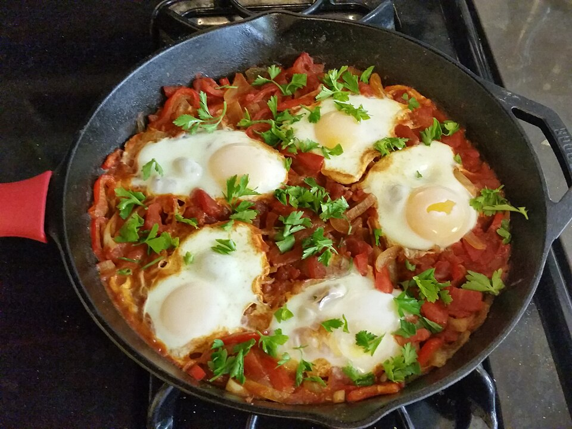

Breakfast, Dinner, Protein, Prep, By Claude
Sauce (batch)
1 tablespoon olive oil
1 lb chicken sausage, sliced into coins (or casings removed and crumbled)
1 onion, diced
2 red bell peppers, diced
4 garlic cloves, minced
2 teaspoons ground cumin
2 teaspoons smoked paprika
1/4 teaspoon cayenne (optional)
1 can (28 oz) crushed tomatoes
1 can (14 oz) diced tomatoes
1 teaspoon kosher salt, black pepper to taste
Per serving
2–3 large eggs
1 tablespoon crumbled feta
Chopped parsley or cilantro
Make the spiced tomato-pepper-sausage sauce in one batch. To eat, heat a portion in a small skillet and poach eggs in it, which takes about 8 minutes. Works for breakfast or dinner.
Brown the sausage in the oil in a large deep skillet or Dutch oven over medium-high, 5 minutes.
Add the onion and peppers and cook 6–8 minutes until soft. Add the garlic and spices and cook 1 minute.
Add both cans of tomatoes and the salt. Simmer uncovered 12–15 minutes until thick enough that a spoon leaves a trail.
Cool and divide into 4 containers. Keeps 5 days in the fridge or 3 months frozen.
To serve: heat one portion in a small skillet until bubbling. Make 2–3 wells, crack an egg into each, cover, and cook on medium-low 5–7 minutes until the whites set and the yolks are still runny.
Top with feta and herbs. Add toast or pita on long-run days.
~490 CALORIES (with 2 eggs)
33G PROTEIN
25G FAT
28G CARBS
7G FIBER
Photo: Shakshuka by Calliopejen1.jpg by Calliopejen1, CC BY-SA 3.0, via Wikimedia Commons. Representative image, not this exact recipe.